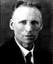

L E J Brouwer founded the doctrine of mathematical intuitionism, which views mathematics as the formulation of mental constructions that are governed by self-evident laws.Brouwer was an unsalaried lecturer at the University of Amsterdam (1909), and was professor of set theory, function theory and axiomatics there from 1912 to 1951. Hilbert wrote a warm letter of recommendation which helped Brouwer to the chair. However in 1919 Hilbert offered Brouwer a chair in Göttingen which he turned down.
Brouwer was a major contributor to the theory of topology and was considered by many to be its founder. He did almost all his work in topology between 1909 and 1913. He discovered characterisations of topological mappings of the Cartesian plane and a number of fixed point theorems.
Brouwer's doctrine differed substantially from the formalism of David Hilbert and the logicism of Bertrand Russell. His doctoral thesis in 1907 on the foundations of mathematics attacked the logical foundations of mathematics and form the beginning of the Intuitionist School.
He rejected in mathematical proofs the Principle of the Excluded Middle, which states that any mathematical statement is either true or false. In 1918 he published a set theory, in 1919 a measure theory and in 1923 a theory of functions all developed without using the Principle of the Excluded Middle.
Van der Waerden, who studied at Amsterdam from 1919 to 1923 said, see [4]:-
Brouwer came [to the university] to give his courses but lived in Laren. He came only once a week. In general that would have not been permitted - he should have lived in Amsterdam - but for him an exception was made. ... I once interrupted him during a lecture to ask a question. Before the next week's lesson, his assistant came to me to say that Brouwer did not want questions put to him in class. He just did not want them, he was always looking at the blackboard, never towards the students. ... Even though his most important research contributions were in topology, Brouwer never gave courses on topology, but always on - and only on - the foundations of intuitionism. It seemed that he was no longer convinved of his results in topology because they were not correct from the point of view of intuitionism, and he judged everything he had done before, his greatest output, false according to his philosophy. He was a very strange person, crazy in love with his philosophy.
L E J Brouwer was elected to the Royal Society of London in 1948.
Luitzen E J Brouwer was elected an honorary member of the Edinburgh Mathematical Society in 1954.
There is a Crater Brouwer on the moon (named after this mathematician,
among others).